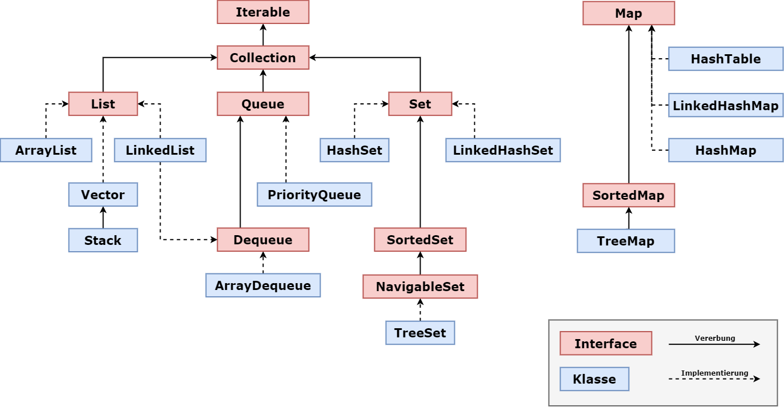

Einführung – Warum Collections?
Stell dir vor, du möchtest in einem Mediaplayer eine Playlist verwalten, in der Songs hinzugefügt, gelöscht und sortiert werden können. Oder du entwickelst ein System, das Nutzereingaben speichert und analysiert. Solche Aufgaben erfordern die Verwaltung von Datenstrukturen, die flexibel und effizient sind. Genau hier kommt das Collections-Framework von Java ins Spiel. Es bietet eine Vielzahl von Klassen und Interfaces, um Daten zu speichern, zu organisieren und zu verarbeiten.
In diesem Kapitel lernst du:
- Die wichtigsten Collection-Typen: ArrayList, LinkedList, HashMap und Stack. Wir betrachten ihre Eigenschaften,
- Einsatzmöglichkeiten von Collections
- Verarbeitung von Collections mithilfe von Iteratoren und erweiterten For-Schleifen.
Das Collections-Framework
Das Collections-Framework ist eine Sammlung von Interfaces und Klassen, die es ermöglichen, Daten effizient zu speichern und zu verwalten. Es bietet Lösungen für häufige Probleme wie:
- Dynamische Arrays (z. B. mit ArrayList)
- Schnelle Zuordnung von Schlüsseln zu Werten (z. B. mit HashMap)
- Stapelverarbeitung nach dem Last-In-First-Out-Prinzip (z. B. mit Stack)
Vorteile des Collections-Frameworks
- Flexibilität: Dynamische Größenanpassung der Datenstrukturen.
- Effizienz: Optimierte Algorithmen für Suchen, Einfügen und Löschen.
- Einheitlichkeit: Gemeinsame Schnittstellen für verschiedene Datenstrukturen.
Übersicht über das Collection Framework

Das Paket java.util enthält alle Interfaces & Klassen, die für die Java Collection benötigt werden.
- Das Interface Iterable bietet den Iterator, der es ermöglicht, durch alle Sammlungen zu iterieren.
- Iterable wird durch Collection erweitert, welche durch Set, List & Queue erweitert wird.
- LinkedList, Vector & ArrayList implementieren List, und Vector wird durch Stack erweitert.
- Set wird von HashSet & LinkedHashSet geerbt, außerdem wird es durch SortedSet erweitert, das von TreeSet implementiert wird.
- Queue wird von PriorityQueue implementiert und durch Deque erweitert, die wiederum von ArrayDeque implementiert wird.
Collection Interfaces
|
Name |
Beschreibung |
|
Set |
Kann keine doppelten Elemente speichern. |
|
List |
Verwaltet die geordnete Sammlung der Elemente. |
|
Queue |
Eine lineare Sammlung, die dem FIFO-Prinzip (First-In-First-Out) folgt. |
|
Deque |
Warteschlange mit zwei Enden; ermöglicht Einfügen & Löschen von Elementen an beiden Enden. |
|
Map |
Kann keine redundanten Elemente speichern und speichert Daten im Schlüssel-Wert-Paar-Format. |
|
SortedSet |
Ordnet Elemente in aufsteigender Reihenfolge. |
Collection Methoden
|
Methode |
Beschreibung |
|
add() |
Elemente zur Sammlung hinzufügen |
|
remove() |
Elemente der Sammlung löschen |
|
clear() |
Löscht alle Elemente der Sammlung. |
|
isEmpty() |
Testet, ob eine Sammlung leer ist. |
|
size() |
Gesamtzahl der Elemente einer Sammlung |
|
equals() |
Vergleicht, ob 2 Sammlungen inhaltlich gleich sind |
|
retainAll() |
Behält Elemente, die in beiden Sammlungen vorkommen |
|
toArray() |
Umwandlung einer Sammlung in ein Array. |
|
contains() |
Prüft, ob ein Wert vorhanden ist oder nicht. |
|
max() |
Findet den größten Wert in einer Sammlung. |
Wichtige Collection-Typen
ArrayList
Die ArrayList ist eine dynamische Liste, die ähnlich wie ein Array funktioniert, aber ihre Größe automatisch anpasst.
Eigenschaften:
- Elemente werden in einer bestimmten Reihenfolge gespeichert.
- Doppelte Werte sind erlaubt.
- Zugriff auf Elemente erfolgt über Indizes.
Beispiel:
import java.util.ArrayList;
public class Main {
public static void main(String[] args) {
ArrayList<String> playlist = new ArrayList<>();
playlist.add("Song A");
playlist.add("Song B");
playlist.add("Song C");
System.out.println("Erster Song: " + playlist.get(0));
for (String song : playlist) {
System.out.println("Song: " + song);
}
}
}LinkedList
Die LinkedList ist eine Liste, bei der die Elemente als Knoten miteinander verbunden sind.
Eigenschaften:
- Gut geeignet für häufiges Einfügen/Löschen von Elementen.
- Schlechtere Zugriffszeit im Vergleich zur ArrayList.
Beispiel:
import java.util.LinkedList;
public class Main {
public static void main(String[] args) {
LinkedList<String> queue = new LinkedList<>();
queue.add("Task 1");
queue.add("Task 2");
queue.addFirst("Urgent Task");
for (String task : queue) {
System.out.println("Aufgabe: " + task);
}
}
}HashMap
Die HashMap ist eine Map-Struktur, die Schlüssel-Wert-Paare speichert.
Eigenschaften:
- Schneller Zugriff auf Werte über Schlüssel.
- Keine garantierte Reihenfolge der Elemente.
Beispiel:
import java.util.HashMap;
public class Main {
public static void main(String[] args) {
HashMap<String, String> modulMap = new HashMap<>();
modulMap.put("OOP", "Objektorientierte Programmierung");
modulMap.put("PRG", "Programmieren");
// Zugriff auf Werte
System.out.println("Modul mit ID OOP: " + modulMap.get("OOP")); // Ausgabe: Modul mit ID OOP: Objektorientierte Programmierung
// Iteration über Schlüssel-Wert-Paare
for (var entry : modulMap.entrySet()) {
System.out.println("ID: " + entry.getKey() + ", Name: " + entry.getValue());
}
}
}Stack
Der Stack arbeitet nach dem Last-In-First-Out-Prinzip (LIFO). Dies ist besonders nützlich bei Transformationen oder Rückverfolgungen.
Eigenschaften:
- Elemente werden gestapelt (push) und zuletzt hinzugefügte zuerst entfernt (pop).
In Processing hast du mit pushMatrix() und popMatrix() bereits einen Stack verwendet, um Transformationen des Koordinatensystems zu speichern:
Stack<String> stack = new Stack<>();
stack.push("Transformation 1");
stack.push("Transformation 2");
// Letzte Transformation entfernen
System.out.println(stack.pop()); // Ausgabe: Transformation 2Iteration über Collections
Java bietet verschiedene Möglichkeiten zur Iteration über Collections:
Erweiterte For-Schleife
Die erweiterte For-Schleife (for-each) ermöglicht eine einfache Iteration über alle Elemente einer Collection. Der Aufbau einer erweiterten For-Schleife ist deutlich einfacher, als der einer normalen For-Schleife:
for ( Datentyp variable : Liste) {
// Schleifenkörper
}Selbstverständlich können Collections auch mit der normalen For-Schleife durchlaufen werden.
Beispiel:
In diesem Beispiel werden alle Songtitel innerhalb der ArrayList vom Typ String ausgegeben.
ArrayList<String> songs = new ArrayList<>();
songs.add("Song A");
songs.add("Song B");
for (String song : songs) {
System.out.println(song);
}forEach() & Lambda-Ausdruck
Collections implementieren das Interface Iterable und können somit die Methode forEach() des Interfaces nutzen. Innerhalb der Klammern wird angegeben, was für jedes Element der Sammlung durchgeführt werden soll.
LinkedList<String> queue = new LinkedList<>();
queue.add("Task 1");
queue.add("Task 2");
queue.addFirst("Urgent Task");
queue.forEach(task -> System.out.println(task));Mit forEach() ist das Entfernen von Elementen aus der Collection während der Iteration nicht erlaubt und führt zu einer ConcurrentModificationException
Lambda-Ausdruck
Das, was in den Klammern angegeben ist, ist ein Lambda Ausdruck. Dabei handelt es sich um einen kurzen Codeblock, welcher Parameter entgegennimmt und einen Wert zurückgibt. Lambda Ausdrücke ähneln Methoden, brauchen aber keinen Namen und können direkt im Codeblock einer anderen Methode implementiert werden. Lambda Ausdrücke sind folgendermaßen aufgebaut:
// Aufbau -----------------------------------
(Parameterliste) -> Ausdruck oder { Anweisung }
// Beispiele --------------------------------
// Einfache Addition zweier Zahlen
(a, b) -> a + b
// Einen Wert quadrieren
x -> x * x
// Ohne Parameter
() -> System.out.println("Hallo Welt")
// Mit Block und explizitem Return
(a, b) -> {
int sum = a + b;
return sum * 2;
}
Iterator
Ein Iterator ist ein Objekt, das explizit aus einer Collection erzeugt wird. Mit den Methoden hasNext(), next() und remove() kann man die Elemente sequenziell durchlaufen und ggf. entfernen.
import java.util.ArrayList;
import java.util.Iterator;
public class Main {
public static void main(String[] args) {
ArrayList<String> songs = new ArrayList<>();
songs.add("Song A");
songs.add("Song B");
Iterator<String> iterator = songs.iterator();
while (iterator.hasNext()) {
System.out.println(iterator.next());
}
}
}Abschluss
Aufgaben
- Aufgabe 1:
Erstelle ein Programm mit einer HashMap, die eine Einkaufsliste sein soll:- Der Schlüssel ist das Produkt, das gekauft werden soll und der Wert die Menge (z.B. 5 Tomaten)
- Füge mindestens fünf Produkte zur Einkaufsliste hinzu.
- Ändere die Menge von einem Produkt.
- Iteriere über die Liste und gib alle Produkte aus.
- Aufgabe 2:
Simuliere einen Stack für Transformationen in einem Grafikprogramm:- Implementiere einen Stack mit Transformationen wie „Translation“ oder „Rotation“.
- Füge Transformationen hinzu und entferne sie schrittweise.
Fragen
- Was sind die Hauptunterschiede zwischen einer ArrayList und einer LinkedList?
- Wie funktioniert das LIFO-Prinzip bei einem Stack?
- Was ist ein Lambda Ausdruck und wo wird er eingesetzt?
Zusammenfassung
- Das Java Collections Framework bietet leistungsstarke Klassen wie ArrayList, LinkedList, HashMap und Stack.
- Mit erweiterten For-Schleifen (for-each) und Iteratoren kannst du effizient durch Collections iterieren.
- Die Wahl der richtigen Collection hängt von den Anforderungen ab – z. B. schneller Zugriff (HashMap) oder dynamische Listen (ArrayList).